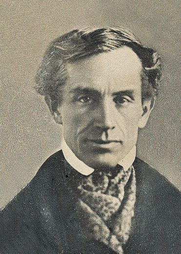

"A eletricidade apenas fornece força ou ela também pode carregar informação?"
A eletricidade pode variar! Ficando mais forte, mais fraca, ligando, desligando e mudando de direção milhões de vezes por segundo. Para Samuel Morse isso era interessantíssimo, pois, controlando a passagem de eletricidade seria possível representar algo, como uma letra por exemplo!
Imagine se a eletricidade ligada por pouco tempo simbolizasse um ponto '.' e por muito tempo simbolizasse um traço '-', em seguida poderíamos relacionar esse código gerado '.-' à letra 'A'. Logo, para representar 'A' seria necessário ligar a energia por pouco tempo -> desligar -> ligar a energia por muito tempo (alguns segundos a mais) -> e desligar definitivamente.
Essa ideia foi o princípio do código Morse, criado por alguém que já estava cansado de mandar sinal de fumaça para poder se comunicar à distância!
Saiba mais:
pageCodMorse.html